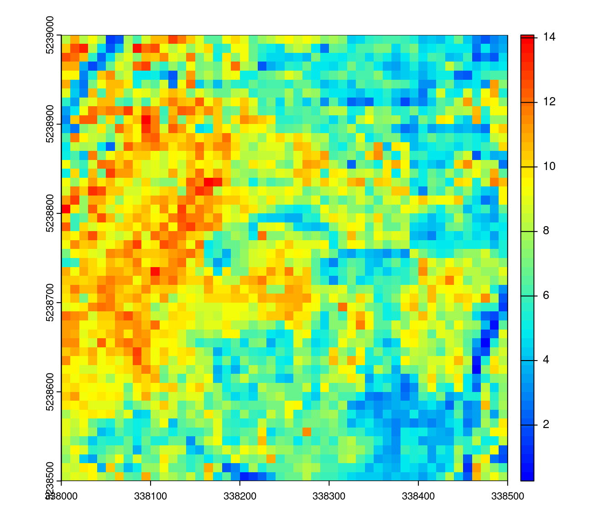
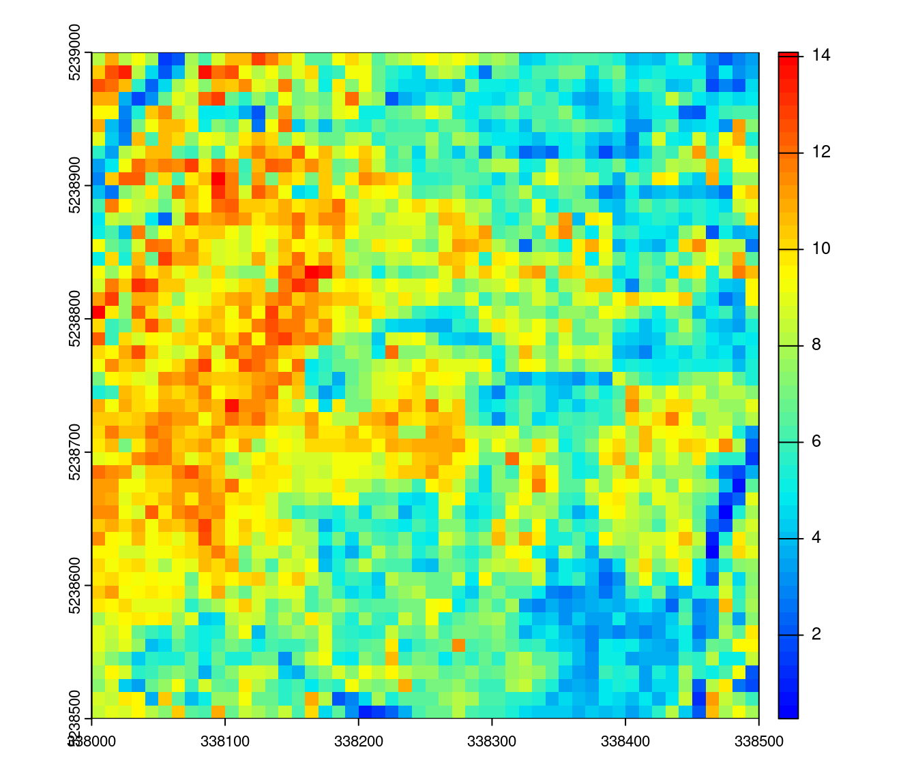
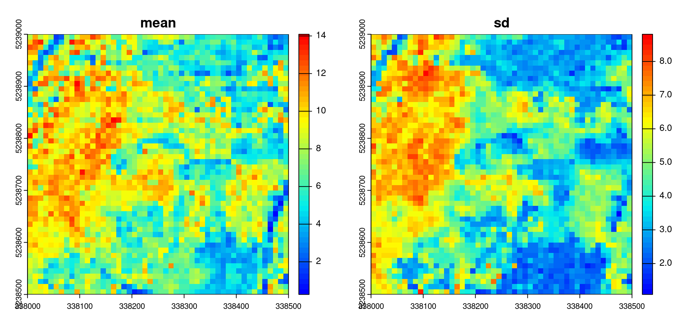
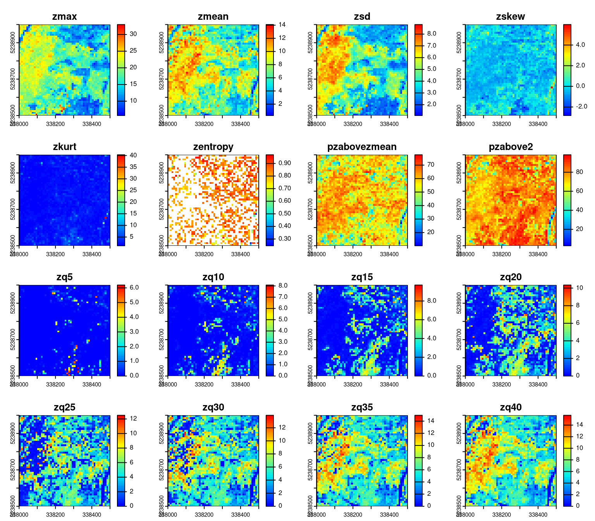
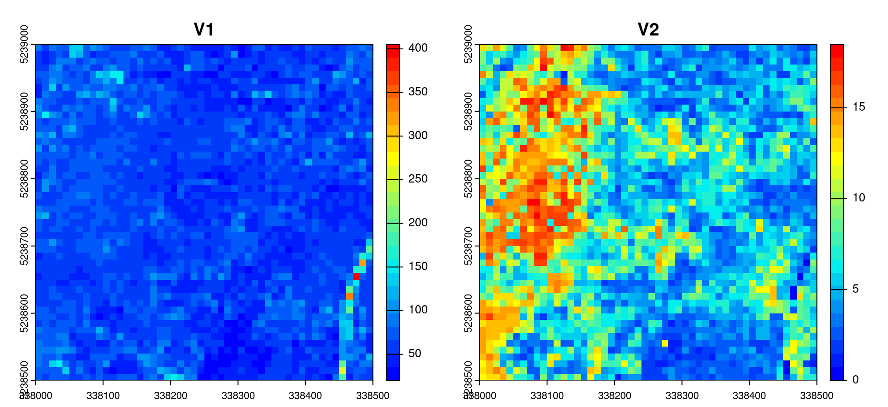
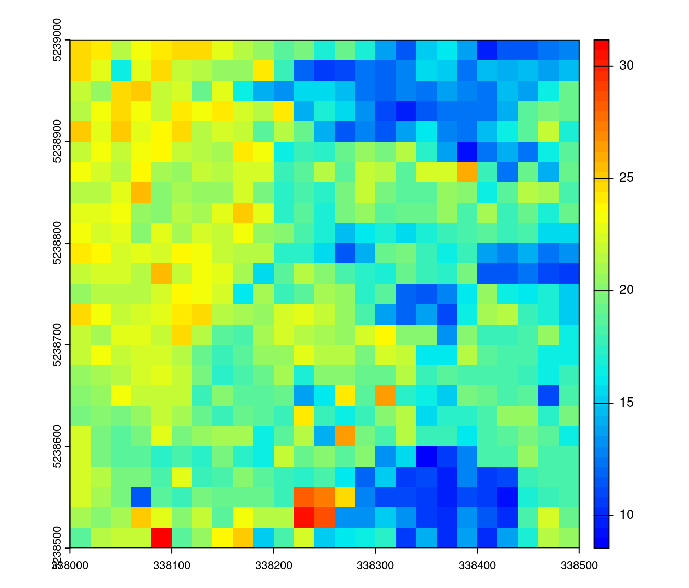
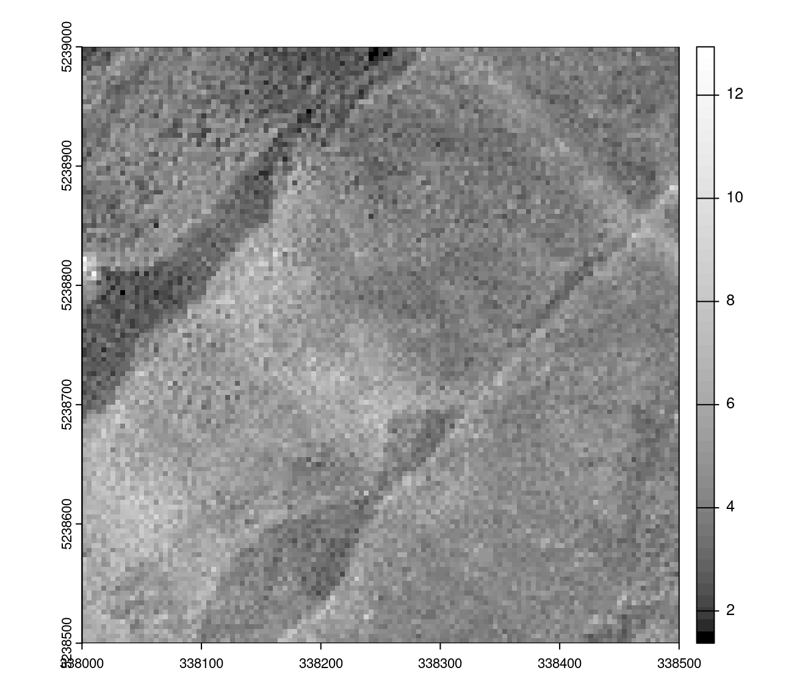
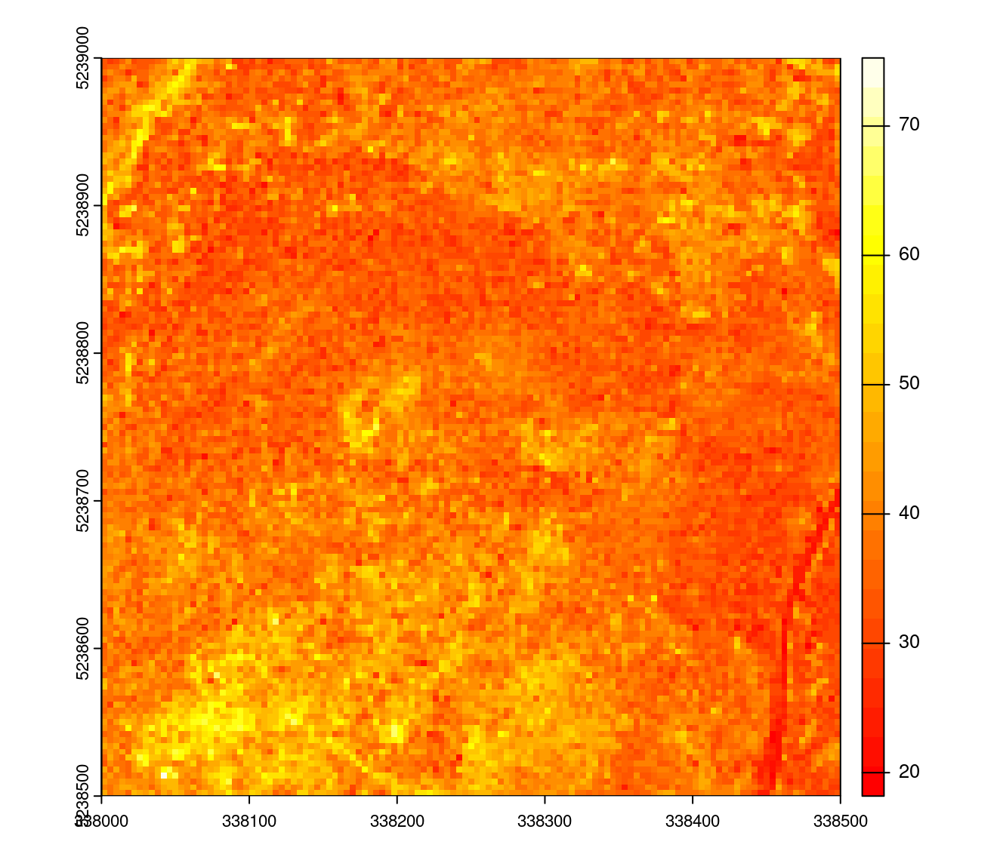
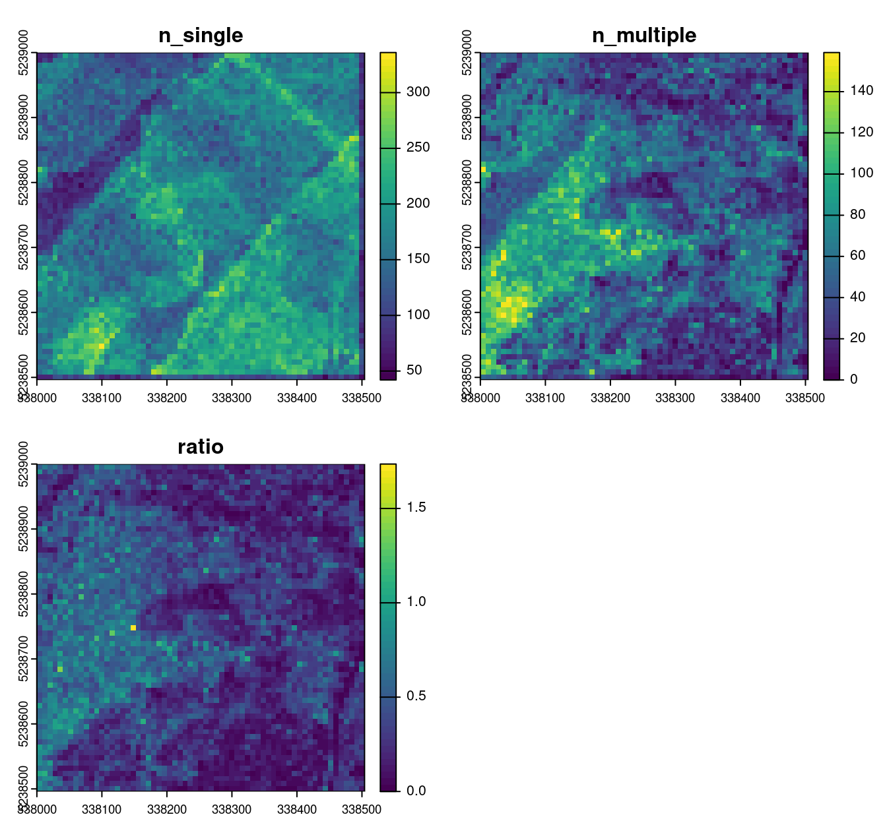

hmean <- pixel_metrics(las, ~mean(Z), 10) # calculate mean at 10 m
plot(hmean, col = height.colors(50))
The “pixel” level of regularization corresponds to the computation of derived metrics for regularly spaced locations in 2D. Derived metrics calculated at pixel level are the basis of the area-based approach (ABA) that we discuss with more details in Chapter 16. In brief, the ABA allows the creation of wall-to-wall predictions of forest inventory attributes (e.g. basal area or total volume per hectare) by linking ALS variables with field measured references. ABA is one application of derived metrics at the pixel level but not the only one.
As seen in Chapter 8 and Chapter 9 calculating derived metrics is straightforward. The user only needs to provide a formula to calculate the metric of interest. For example, to calculate the average height (mean(Z)) of all points within 10 x 10 m pixels we can run the following:
hmean <- pixel_metrics(las, ~mean(Z), 10) # calculate mean at 10 m
plot(hmean, col = height.colors(50))
The returned hmean object is a raster. The default format is terra but an argument pkg allows for RasterLayer or stars outputs:
hmean
#> class : SpatRaster
#> dimensions : 50, 50, 1 (nrow, ncol, nlyr)
#> resolution : 10, 10 (x, y)
#> extent : 338000, 338500, 5238500, 5239000 (xmin, xmax, ymin, ymax)
#> coord. ref. : WGS 84 / UTM zone 19N (EPSG:32619)
#> source(s) : memory
#> name : V1
#> min value : 0.2670795
#> max value : 14.0898504As described in Chapter 8 and Chapter 9, to calculate more than one metric at a time a custom function needs to be created first. The function can contain any number of metrics but needs to return a labeled list. For example, to calculate the mean and standard deviation of point heights, the following function can be created. In this case the return object is a multilayer raster is returned.
f <- function(x) { # user-defined fucntion
list(mean = mean(x), sd = sd(x))
}
metrics <- pixel_metrics(las, ~f(Z), 10) # calculate grid metrics
plot(metrics, col = height.colors(50))
The functions that specify which metrics to calculate can of course contain any number of metrics. The most commonly used metrics are already predefined in lidR - the stdmetrics() function contains metrics that summarize the vertical distribution of points, their intensities, and return structure. The complete list of all metrics can be found in the lidR wiki page. To use the predefined list of 56 metrics we can run the pixel_metrics() function as follows:
metrics <- pixel_metrics(las, .stdmetrics, 10) # calculate standard metrics
plot(metrics, col = height.colors(50))
Because of the flexibility in defining metrics, it is very easy to extend basic functionality to create new, non-standard metrics. For example, below we demonstrate how the coefficient of variation and inter-quartile range can be calculated:
metrics_custom <- function(z) { # user defined function
list(
coef_var <- sd(z) / mean(z) * 100, # coefficient of variation
iqr <- IQR(z)) # inter-quartile range
}
metrics <- pixel_metrics(las, ~metrics_custom(z=Z), 10) # calculate grid metrics
plot(metrics, col = height.colors(25))
All *_metrics functions can map any kind of formula as long as it returns a number or a list of numbers, meaning that that it’s possible to input an expression derived from a predictive model to map the resource. In the Chapter 9 we made a model that can be written \(0.7018 \times pzabove2 + 0.9268 \times zmax\). We can map this predictive model with a resolution of 10 meters:
prediction <- pixel_metrics(las, ~0.7018 * sum(Z > 2)/length(Z) + 0.9268 *max(Z), 20) # predicting model mapping
plot(prediction, col = height.colors(50)) # some plotting
Point density is the number of points within a pixel divided by the area of the pixel.
density <- pixel_metrics(las, ~length(Z)/16, 4) # calculate density
plot(density, col = gray.colors(50,0,1)) # some plotting
When using only the first returns, the same formula gives the pulse density instead of the point density
density <- pixel_metrics(las, ~length(Z)/16, 4, filter = ~ReturnNumber == 1L)It’s possible to generate a map of the average intensity of first return only
imap <- pixel_metrics(las, ~mean(Intensity), 4, filter = ~ReturnNumber == 1L) # mapping average intensity
plot(imap, col = heat.colors(25))
Many other raster-based applications can be derived with adequate metrics. In Chapter 17 we will see some out of the box possibilities to demonstrate how the concept of metrics can be leveraged to design new applications. A simple uncommon application could be to map the ratio between multiple returns and single returns.
To count single returns we can count the number of points where number of returns equal to 1. To count the number of multiple returns we can count the number of points with a return number equal to 1 AND a return number above 1.
mymetric <- function(return_number, number_of_returns) { #user-defined function
nsingle <- sum(number_of_returns == 1L)
nmultiple <- sum(return_number == 1L & number_of_returns > 1L)
return(list(n_single = nsingle,
n_multiple = nmultiple,
ratio = nmultiple/nsingle))
}
rmap <- pixel_metrics(las, ~mymetric(ReturnNumber, NumberOfReturns), 8) # mapping retunrs
plot(rmap, col = viridis::viridis(50))